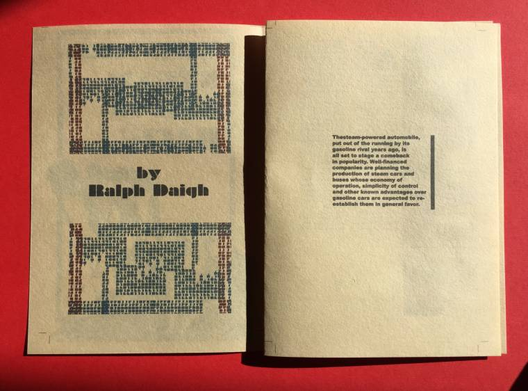
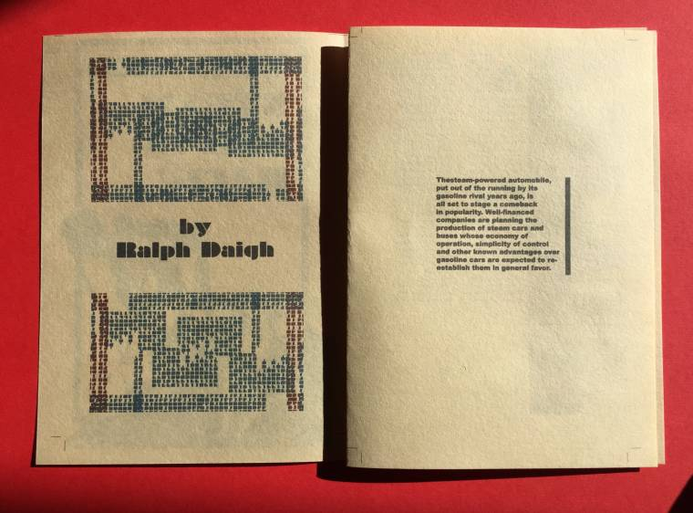
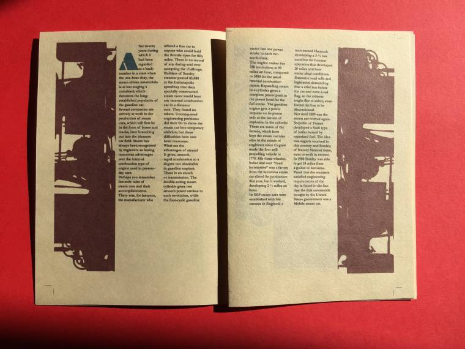
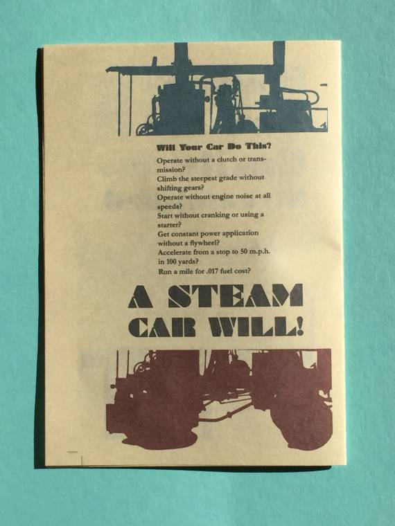

As time passes magazines, newspapers, and books age with time. Newspapers and magazines run the greatest risk for forever losing their content as they are made to be disposable objects. How are we supposed to see what publications looked like long ago if they are hard to find? Content from magazines; no matter what time they were produced have valuable information as a historical source of what news writing was like at the time and what trends were happening. Magazines like Modern Mechanix and Inventions, which started in 1928 and ceased publication in 2001, have issues that are outdated and as time passes, becoming harder to find as the magazines continue to age and brittle. The articles, the content, are all something that is still valuable no matter what. Long after we are gone, our work should live on. Why shouldn’t we preserve the work of writers from long ago?.
Bring Modern Mechanix to a new generation of people and share articles that should not be forgotten. The article I am creating a new for is titled "The Steam Car is Back!" by Ralph Daigh
Orginal ArticleCreate a new user experience through the art of the zine, a small circulation of monthly mini magazines that showcase a different Modern Mechanix article reimagined and brought to a new light. Zines are mostly handmade and printed in small batches. People would be able to get the zine either on the fifth floor of The New School University Center in the Social Justice Hub on the zine rack, or local coffee shops that will supply the zine.
 copy-compressed.jpg) 

We will create Zines using Modern Mechanix articles and give new life to them by creating diverse layouts and unique designs to make the articles not only enjoyable to read, but easier to read. The articles from Modern Mechanix are long and mostly blocks of text with a design that can hard to follow. The Zines would be dedicated to one article and readers of the Zine will not only be able to revisit an article from the 1930’s, they will be able to see that even though the articles are old, there is still something valuable to them and the value is in the content and the Zine.
The Zines will be designed based on the content of the article. The number of pages per Zine vary based on the article and design. It will appeal to the young and old. Unlike commercial magazines, Zines can reach a diverse group of people because most are free, as this one will be which means more people can get access to the Zine. My goal for this Zine is reach an audience that doesn’t have to know about home improvement or technology, it can cater to those people also, but by giving a fresh take on these old articles, it will reach people who have an appreciation for vintage things with a modern twist.
